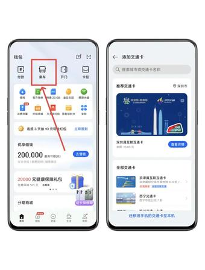
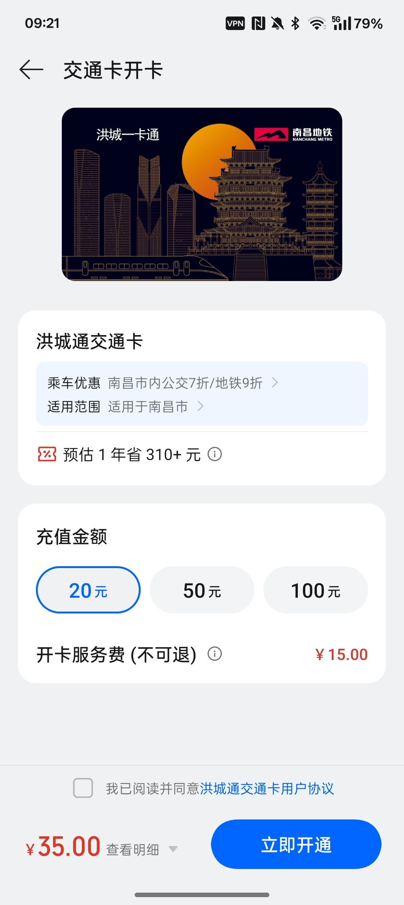

儿童团和赤卫队的功用 - 豆包 (16 消息)¶
🔗 原始链接: https://www.doubao.com/chat/38434531155478786 📅 导出时间: 2026年7月12日 22:26:37
👤 用户¶
🕐 2026年7月12日 22:26:37 | #1 | 轮次 1
儿童团和赤卫队 的功用
🤖 doubao¶
🕐 2026年7月12日 22:26:37 | #2
赤卫队、儿童团的设立功用（土地革命时期苏区武装群众组织）¶
一、赤卫队（成年群众武装，核心基层防卫力量）¶
1. 军事防卫功能¶
- 警戒放哨、盘查路人，把守村口、要道，防范白军、地主武装、特务偷袭；
- 配合红军作战：运送弹药、担架救护伤员、构筑工事、牵制敌军、打扫战场；
- 清剿本地土匪、还乡团、反动民团，维护乡村治安。
2. 参军支前¶
动员青壮年参加红军，组织粮食、衣物、草鞋等物资筹集，保障前线供给。
3. 政权维稳¶
镇压反革命、监视土豪劣绅，协助苏维埃政府分田地、催收公粮，巩固红色基层政权。
4. 后备兵源¶
作为红军预备役，定期军事训练，红军扩红时直接整队补充主力部队。
二、儿童团（少年儿童组织，红色后备培育组织）¶
1. 辅助警戒、情报传递¶
年纪小不易被敌人警惕，负责村口、山路放哨查路条，秘密传递情报、送信联络。
2. 宣传动员¶
书写标语、传唱革命歌谣、向群众宣讲革命道理，动员家人支援红军。
3. 后勤辅助¶
帮红军洗衣、看护伤病员、看管缴获物资、放牛割草、优待红军家属。
4. 思想培育（核心长期功用）¶
对少年开展阶级教育、革命教育，培养革命接班人，树立拥军拥政观念； 学习识字、简单军事常识，从小建立革命意识，长大加入赤卫队、红军。
5. 监督协助¶
监视可疑人员，监督地主、反动分子动向，配合赤卫队开展基层清查工作。
三、二者分工配合总作用¶
- 分层防卫体系：赤卫队扛枪正面防卫、作战；儿童团隐蔽侦查、辅助勤务，老少结合构建乡村红色防线；
- 全民战争动员：覆盖成年、少年，实现苏区全民皆兵，支撑红军长期游击与反 “围剿”；
- 巩固苏维埃根基：武装维稳 + 思想教化双管齐下，保障土地革命政策落地；
- 革命人才梯队：儿童团成长后加入赤卫队，赤卫队优秀者升入红军，形成完整兵员输送链条。
👤 用户¶
🕐 2026年7月12日 22:26:37 | #3 | 轮次 2
井冈山上苏区吗
🤖 doubao¶
🕐 2026年7月12日 22:26:37 | #4
井冈山是苏区，准确说是井冈山革命根据地，是全国第一块农村革命根据地，属于早期核心苏区¶
一、定性区分¶
- 根据地：1927 年 10 月毛泽东率秋收起义部队上井冈山，开辟井冈山革命根据地，是工农武装割据起点；
- 苏区：“苏区” 全称苏维埃区域，指建立了苏维埃工农政权、实行土地革命的区域。 井冈山根据地 1928 年成立湘赣边界工农兵苏维埃政府，有完整苏维埃政权、分田运动、赤卫队、儿童团、红军，完全属于苏区，后世统称湘赣苏区的源头。
二、井冈山苏区的配套组织（对应你刚才问的赤卫队、儿童团）¶
- 武装体系：主力是红四军；地方武装为赤卫队、暴动队；少年组织儿童团；
- 政权：乡、区、县三级苏维埃政府，开展打土豪、分田地；
- 功能：农村包围城市的样板，各地后续赣南闽西中央苏区、湘鄂西苏区都借鉴井冈山模式。
三、补充小知识点¶
狭义 “中央苏区” 专指赣南、闽西，但井冈山属于湘赣苏区，是最早的红色苏区，是中央苏区的重要战略屏障与源头根据地。
👤 用户¶
🕐 2026年7月12日 22:26:37 | #5 | 轮次 3
一加手机添加公交卡
🤖 doubao¶
🕐 2026年7月12日 22:26:37 | #6
一加手机添加 NFC 公交卡完整教程（ColorOS / 一加全机型通用）¶
一、前期准备¶
- 确认硬件：一加数字系列、Ace 系列国内国行机型均带全功能 NFC；海外氧 OS 无交通卡功能。
- 开启 NFC打开「设置 → 连接与共享」，打开NFC；触碰付款默认应用选择「钱包」，避免刷卡跳转微信 / 支付宝。
- 更新软件：应用商店更新「一加钱包 / OPPO 钱包」到最新版，系统升级至最新 ColorOS。


二、开通全新虚拟公交卡（最常用）¶
- 打开桌面自带钱包APP，首页点击【去乘车 / 交通卡】
-
点击「添加交通卡」，搜索城市名称，两种卡可选：
- 本地城市卡：本地公交地铁折扣最全（如洪城一卡通・南昌）
- 交通联合卡：全国 300 + 城市通用，异地无本地优惠
-
阅读协议并同意，支付开卡费（常有 0 元开卡活动，部分卡押金可退）
- 选择充值金额（最低 10 元），微信 / 支付宝支付，等待 1 分钟写入卡片
- 完成，卡片存入「我的交通卡」
三、实体公交卡移卡（把实体卡余额转到手机）¶
- 钱包→添加交通卡→选择「实体卡迁移」
- 将实体公交卡紧贴手机背部 NFC 感应区（摄像头附近）
- 读取卡片信息，验证信息后支付手续费，实体卡余额转入手机
注意：迁移后实体卡会失效；学生卡、老年优惠卡大多不支持迁移。
四、刷卡使用方法¶
- 息屏直接刷（无需解锁、不用打开 APP），手机背部贴近公交 / 地铁读卡器
- 手机关机低电量仍可刷卡（断电后支持 6 小时左右离线刷卡）
- 多卡设置：钱包交通卡页面设默认卡，刷卡优先扣选定卡片
五、南昌本地补充（你所在城市）¶
可选「洪城一卡通」本地卡，南昌公交、地铁享受实体卡同等折扣； 也可开通全国交通联合卡，外出其他城市通用。
六、常见问题¶
-
刷卡没反应
- 确认 NFC 开启、默认付款应用是钱包；手机壳太厚取下；对准背部摄像头位置。
-
找不到交通卡入口
- 国行 ColorOS 才有，海外氧 OS 不支持；更新钱包 APP。
-
开卡失败
- 切换 Wi‑Fi / 流量，清理钱包缓存，重启手机重试。
-
退款退卡 钱包 - 交通卡详情页，找到退卡入口，余额扣除手续费原路返还。
相关视频
NFC
一加手机全功能NFC，出行乘车真方便#一加11 #一加ace2 #一加
使用一加手机的NFC功能，碰一下手机即可刷公交乘地铁，没电没网也能用哦！#一加手机 #一加甘肃
全功能NFC能做些什么?#一加11 #手机NFC
👤 用户¶
🕐 2026年7月12日 22:26:37 | #7 | 轮次 4
这个要 15 元
🤖 doubao¶
🕐 2026年7月12日 22:26:37 | #8
一、15 元是什么费用（一加 / OPPO 钱包洪城一卡通）¶
这 15 元是一次性不可退开卡服务费，不是押金黑猫投诉：
- 实体洪城普通卡 15 元是押金，线下营业厅可退；
- 手机 NFC 虚拟洪城一卡通的 15 元属于平台技术服务费，开卡页面会标注不予退还，线上退卡只能取回卡内充值余额，15 元不会返还。
二、两种方案对比，省钱选择¶
方案 1：本地洪城一卡通（15 元开卡费，不退）¶
✅ 优势：南昌公交 7 折、地铁 9 折、1 小时换乘优惠，本地折扣最全 ❌ 缺点：15 元一次性花费；换不同品牌手机无法迁移，换机要重新花 15 元开卡
方案 2：全国交通联合卡（无开卡费，推荐）¶
✅ 优势：0 元开卡，全国三百多城市公交地铁通用；卡可随账号迁移，换机不用重开 ❌ 缺点：外地能用，但南昌地铁无 9 折优惠，只有公交基础折扣，没有换乘减免
三、省钱小技巧¶
- 先看钱包首页活动：经常有限时0 元开洪城一卡通活动，蹲活动再开能省 15 元；
- 日常只坐公交、很少坐地铁：直接开交通联合卡，完全不用掏 15 元；
- 每天地铁通勤、看重换乘优惠：只能选洪城本地卡，接受 15 元一次性成本。
四、补充退费说明¶
后续不用卡时：钱包内注销卡片，充值余额原路退回，但 15 元开卡服务费永久不退，洪城一卡通官方对此有明确规则黑猫投诉。
👤 用户¶
🕐 2026年7月12日 22:26:37 | #9 | 轮次 5

🤖 doubao¶
🕐 2026年7月12日 22:26:37 | #10
界面细节解读📌¶
这是一加（搭载 ColorOS 钱包）开通南昌洪城一卡通虚拟卡的页面，总价 35 元的构成拆解： 充值 20 元（存入卡内可乘车消费） + 不可退还的开卡服务费 15 元 = 合计 35 元
权益亮点¶
- 本地专属优惠：南昌市公交享 7 折、地铁享 9 折，同时适配南昌本地公交换乘减免政策，页面标注一年预估可以省下 310 元以上，日常通勤频次偏高的话，15 元的开卡成本很快就能被优惠抵扣回来。
- 使用便利性：手机 NFC 息屏即可刷卡，不用掏出实体卡片，低电量短时也支持离线刷码通行。
决策参考⚠️¶
适合付费开通的情况¶
日常长期在南昌通勤，经常乘坐地铁 + 公交，在意本地专属折扣、换乘福利，选这张卡性价比很不错。
可以备选其他方案的情况¶
- 偶尔才在南昌出行：可以选择钱包里的全国交通联合卡，大多免去 15 元开卡费，缺点是南昌地铁拿不到 9 折优惠；
- 在意 15 元无法退款这一点：可以时常留意钱包活动，平台不定期放出洪城一卡通 0 元开卡的限时福利，等待活动再开通就能省下这笔服务费。
操作小提示¶
正式开通前必须勾选「我已阅读并同意洪城交通卡用户协议」，才可点击下方蓝色的立即开通按钮；后续如果不想继续使用卡片，仅能够退回卡内剩下的充值余额，前期缴纳的 15 元服务费不会返还。
实操小贴士💡¶
开卡完毕之后建议进入钱包设置，把这张洪城交通卡设置成默认交通卡，日常刷卡就不会出现唤起其他付款方式的情况；刷卡感应位置对准一加手机背部靠近摄像头的 NFC 区域，太厚的手机壳建议取下，提升刷卡的成功率。
👤 用户¶
🕐 2026年7月12日 22:26:37 | #11 | 轮次 6
怎么免费
🤖 doubao¶
🕐 2026年7月12日 22:26:37 | #12
洪城一卡通免除 15 元开卡费的可行方案（一加 / OPPO 钱包适配）¶
方案一：蹲官方限时 0 元开卡活动（最正统，拿到本地专属优惠）💡¶
活动获取渠道¶
- 钱包 App 内部活动打开 OPPO 钱包（一加原生适配）首页，留意首页 banner、乘车板块弹窗、活动专区，节假日、开学季、南昌本地出行节点经常会放出洪城一卡通减免 15 元开卡服务费的限时券，活动生效之后原本不可退的 15 元费用直接免除，仅需要充值最低 20 元车费即可开卡南昌本地宝。小细节：把手机定位锁定南昌，异地定位一般不会推送本地开卡福利。
- 官方公众号蹲活动 关注「洪城一卡通」官方公众号、「OPPO 钱包」公众号，新活动会提前预告，偶尔还会社区限量发放开卡优惠券。
- 一加社区留意专属福利 浏览一加官方社区江西板块，手机厂商区域活动有时会投放本地公交开卡专属免单福利一加社区。
活动小技巧¶
- 钱包开启消息推送，开卡优惠上线能够及时收到推送；
- 大促节点优先级：寒暑假开学时段、五一 / 国庆、南昌本地文旅活动期间，活动概率最高。
方案二：选择全国交通联合卡，永久规避 15 元开卡费（立刻就能操作，不用等待活动）✅¶
操作步骤¶
- 钱包点击添加交通卡，不挑选「洪城通交通卡」，转而搜索全国交通联合一卡通；
- 该类卡片日常大多 0 服务费开卡，无需支付那笔 15 元不可退费用；
利弊权衡¶
优势：免去一次性开销、卡片跟随 OPPO 账号迁移，后续更换一加手机不需要重新付费开卡，国内三百多城市都能刷卡； 短板：在南昌仅公交可以享受折扣，地铁没法拿到洪城一卡通专属 9 折，同时无法享受南昌 1 小时换乘减免政策，通勤地铁频次高就不太划算。
方案三：线下办理实体卡做替代（线下场景可选）📌¶
前往洪城一卡通线下自营网点办理实体卡片，线下实体的 15 元属于可退还押金，后续不用卡片前往线下网点就能够拿回押金，区别在于日常需要随身携带实体卡，不能实现手机一碰刷卡。
不推荐的踩坑提醒⚠️¶
- 不要网购第三方号称 “破解免 15 开卡费” 的教程、代开服务，NFC 虚拟卡绑定手机账号，第三方操作极易造成账号封禁、资金隐患；
- 小程序、支付宝、微信端的乘车码不属于 NFC 公交卡，二者体系独立，没法用来抵扣钱包这边 NFC 洪城一卡通的开卡服务费。
选择建议参考¶
- 地铁通勤每周≥3 次：耐心蹲钱包官方免开卡活动，后续本地优惠省下的车费很快覆盖成本；
- 平时基本只搭乘公交、出行频次一般：直接开通 0 元的交通联合卡当下就能够省下 15 元；
- 不习惯手机刷卡：线下办理押金可退的实体洪城一卡通。
👤 用户¶
🕐 2026年7月12日 22:26:37 | #13 | 轮次 7
Google 的钱包有这个功能吗
🤖 doubao¶
🕐 2026年7月12日 22:26:37 | #14
结论先行：Google 钱包（Google Wallet）没法用来添加南昌洪城一卡通，无法借此规避那 15 元开卡费，下面详细拆解原因：¶
一、地域层面的硬性限制⚠️¶
- Google Wallet 官方落地服务区域不包含中国大陆内地电子发烧友...。国行一加手机出厂就没有预装完整谷歌 GMS 服务框架，就算手动自行安装谷歌套件，也无法解锁内地交通卡的空中发卡权限。
- 谷歌钱包对接的公交卡均是海外区域的票卡，比如日本 Suica 西瓜卡、英国 Oyster 卡、中国台湾 iPass 一卡通等，至今没有接入洪城一卡通、内地任意城市本地市政公交卡iPASS...。
二、合作生态层面的壁垒📌¶
国内城市 NFC 公交卡，都需要当地一卡通公司和手机厂商（OPPO / 一加、小米、华为、苹果）单独开展适配合作，做本地化的密钥、发卡体系对接：
- 洪城一卡通目前完成适配的只有 OPPO 钱包（也就是你一加手机自带的钱包）、小米 Pay、华为 Pay、Apple Pay 这几个国内主流手机钱包渠道问政江西；
- 洪城一卡通官方没有和 Google Wallet 签署适配合作，谷歌钱包列表搜不到洪城一卡通，自然无法开通这张卡。
三、两个常见误区澄清¶
- 即便你拥有海外版一加手机、成功部署谷歌全套服务，也仅能够添加海外当地公交卡，依旧找不到南昌洪城一卡通；
- Google 钱包能够绑定境外银行卡进行海外线下刷卡，但这属于银行卡闪付范畴，不等同开通本地市政公交 NFC 卡，二者体系完全独立。
四、你当下可行的替代选择回顾¶
- 继续使用一加自带的 OPPO 钱包，等候官方限时 0 开卡费活动；
- 在 OPPO 钱包开通全国交通联合卡，直接免除 15 元服务费；
- 线下网点办理押金可退的实体洪城一卡通。
补充小细节¶
唯一例外场景：你前往海外定居出行，Google 钱包才会发挥添加当地公交卡的优势；日常在南昌通勤，谷歌钱包没有适配价值。
👤 用户¶
🕐 2026年7月12日 22:26:37 | #15 | 轮次 8
一加只能用软件打九折吗
🤖 doubao¶
🕐 2026年7月12日 22:26:37 | #16
详细解答：一加手机拿南昌地铁常态化 9 折，并非只有这一种软件方式，下面分常规固定折扣、临时活动优惠两大板块梳理¶
一、常态化永久地铁 9 折（日常稳定生效）¶
方式 1：一加自带 OPPO 钱包开通 NFC 洪城一卡通（你现在看到的方案）¶
需要支付 15 元不可退开卡服务费，息屏一碰就可刷卡，固定地铁 9 折、公交 7 折，还能享受官方 1 小时换乘减免福利wenz.jxnew...。
方式 2：线下实体洪城一卡通¶
线下线下网点办理实体普通卡，15 元属于可退还押金，不用卡时前往线下网点就能拿回押金，刷卡享受一模一样的地铁 9 折、公交 7 折、换乘优惠，一加手机 NFC 后续也能把这张实体卡迁移录入手机（迁移有条件限制，老年卡、学生优惠卡不可迁移）wenz.jxnew...。
重要排除说明¶
- 支付宝、微信、鹭鹭行扫码、交通联合 NFC 虚拟卡拿不到日常固定 9 折：扫码乘车原价计费；全国交通联合虚拟卡在南昌地铁无常规 9 折福利，公交才可打折一加社区；
- Google 钱包无法适配洪城一卡通，彻底排除这个途径。
二、临时性优惠（不定期活动，折扣力度常常优于 9 折）¶
借助一加手机安装各类 APP 也可以拿到更低折扣，优惠不是长期固定，会随活动周期变化：
- 鹭鹭行专属活动：绑定指定第三代社保卡，活动时段最低做到地铁 6 折，存在每月、每日乘车次数上限约束南昌本地宝；
- 云闪付、支付宝周期性福利：日常发放地铁立减券、周末专属折扣、商圈出行礼包，偶尔折扣优于 9 折，优惠额度每期更新；近期 7.1-10.8 每晚 21 点之后，依托鹭鹭行体系的多款扫码渠道可以免费搭乘地铁，短期福利力度极强南昌轨道交...；
- 各类银行 APP（建行生活、农行 APP 等）也会阶段性放出地铁乘车立减活动。
三、方案对比 & 选择建议¶
表格
| 方案 | 稳定 9 折 | 15 元费用属性 | 便利性 | 限制点 |
|---|---|---|---|---|
| 一加钱包 NFC 洪城虚拟卡 | ✅稳定享受 | 服务费不可退 | 最高，息屏 NFC 刷卡 | 一次性支出 15 元 |
| 线下实体洪城一卡通 | ✅稳定享受 | 15 元押金可退 | 偏低，日常需要携带卡片 | 容易弄丢卡片 |
| 各类扫码 APP（鹭鹭行 / 支付宝等） | ❌常态没有 9 折，仅活动期降价 | 无前置开卡开销 | 中等，需要打开调出乘车码 | 优惠存在有效期、次数上限 |
| 交通联合 NFC 卡 | ❌地铁无固定 9 折 | 多数免开卡费 | 高 | 地铁原价计费 |
实操建议¶
- 如果想要长年稳定保持地铁 9 折：不想花不可退的 15 元，优先线下办理实体洪城一卡通；能接受一次性 15 元开销，就等待一加钱包 0 元开卡活动上线再开通虚拟卡；
- 日常地铁频次不高、想要节省前期开卡成本：日常使用鹭鹭行、云闪付、支付宝扫码，蹲平台阶段性活动折扣即可；眼下 21 点后的免费乘车活动就可以充分利用。
补充小细节¶
洪城一卡通自家 APP 出的二维码仅公交享受折扣，地铁扫码依旧原价，这点要留意避开误区wenz.jxnew...。
由 NousSave Ai Chat Exporter 生成 | doubao | 2026/7/12